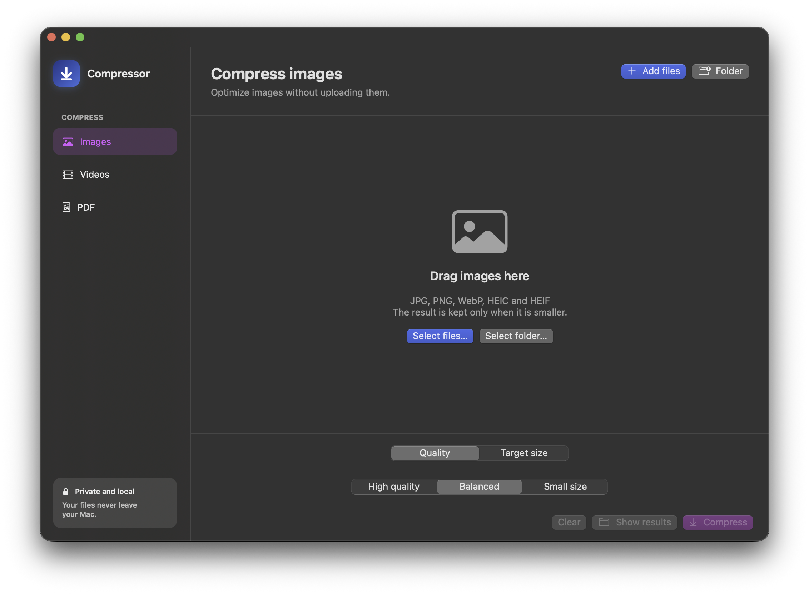

Optimiza imágenes, vídeos y documentos PDF en una única app limpia, potente y privada. Todo se procesa en local con aceleración por hardware: tus archivos nunca salen de tu equipo.

Sin esperas en la nube ni configuraciones complejas. Ajusta los MB aproximados que necesitas y comprime en segundos.
Tus fotos confidenciales, grabaciones y contratos nunca se suben a la nube. Sin servidores externos ni registros.
Tus archivos originales jamás se modifican ni sobrescriben. Y si una compresión no reduce peso, se descarta automáticamente.
Especifica un tamaño objetivo aproximado (ej. 5 MB para enviar por correo o WhatsApp) y el motor calculará la escala y calidad ideal.
Integrado directamente en el menú contextual de macOS. Selecciona uno o cientos de archivos en Finder, haz clic derecho y compresiónalos al instante.
Olvídate de buscar herramientas web con límites de tamaño o anuncios molestos.
Compresión inteligente basada en ImageIO y CoreGraphics. Encuentra la máxima calidad visual manteniendo los perfiles de color y la transparencia alfa intactos.
Transcodificación por hardware con AVAssetReader y AVAssetWriter. Control preciso de bitrate con codificación H.264 para máxima compatibilidad con cualquier dispositivo.
Nuevo motor en dos niveles: Nivel 1 con QuartzFilter para comprimir fotos incrustadas conservando texto vectorial, y Nivel 2 adaptativo para documentos escaneados.
Comparación con servicios online tradicionales y herramientas web.
| Característica | Compressor para Mac | Webs Online (iLovePDF, etc.) | Herramientas de Pago |
|---|---|---|---|
| Privacidad de tus datos | 🔒 Local (Nunca salen de tu Mac) | ⚠️ Subida a servidores de terceros | Variable / Telemetría |
| Límites de tamaño o archivos | ✅ Sin límites (Gigas o miles de archivos) | ❌ Límites por archivo (ej. 25-50 MB) | ✅ Ilimitado |
| Velocidad de proceso | ⚡ Rápido (Acelerado por GPU) | 🐢 Lento (Sujeto a tu velocidad de subida) | ⚡ Rápido |
| Coste | 🎁 Gratis y Open Source | ❌ Suscripciones o colas de espera | ❌ 40€ - 80€ / año |
| Funciona sin conexión (Offline) | ✅ Sí, en cualquier lugar | ❌ Requiere conexión obligatoria | ✅ Sí |
| Integración con Finder | ✅ Clic derecho nativo | ❌ No disponible | ⚠️ Requiere extensiones pesadas |
Todo lo que necesitas saber sobre instalación y funcionamiento.
Compressor-1.2.dmg, ábrelo con doble clic y arrastra el icono de Compressor a la carpeta Aplicaciones.
Comprimidos al lado del archivo con el resultado optimizado. También puedes configurarlo para guardar junto al original o en cualquier carpeta que elijas.
Compressor es un proyecto independiente, gratuito y de código abierto creado para hacerte el día a día más fácil. Si te ha sacado de un apuro con un archivo pesado o te ha ahorrado minutos de trabajo, ¡invítame a un café en Ko-fi para apoyar su mantenimiento y futuras mejoras!
Invítame a un café en Ko-fi